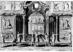

Gerard Thibault, Academie de l’espée ou se demonstrent par reigles mathematiques sur le fondement d’un cercle mysterieux la theorie et pratique des vrais et iusqu’a present incognus secrets du maniement des armes a pied et a cheval. [Leiden, B. en A. Elzevier,] 1628 [= 1630]. -- (Bibliotheca Thysiana, 2419)
Vanuit de min of meer ruwe vechtkunst van de middeleeuwen had de schermkunst met degen of rapier zich ontwikkeld tot een spel met vaste regels, dat aanvankelijk beoefend werd door edellieden, maar later, in Noordwest-Europa, ook door de zonen van rijke burgers. In de loop van de zestiende eeuw waren vooral in Italië verscheidene handboeken om de kunst te leren verschenen. Geen echter was zo prachtig uitgevoerd als Thibaults Academie de l’espée. Gerard Thibault (1574-1627) vestigde zich na een zwervend bestaan in 1622 als schermmeester van de universiteit te Leiden. Hij stond, als de meesten van zijn collega’s, in hoog aanzien en had zijn vaardigheid gedemonstreerd aan de prinsen Maurits en Frederik Hendrik die, experts als ze zelf waren, zeer onder de indruk kwamen. Thibault beriep zich erop een nieuwe methode van schermen te hebben uitgevonden volgens mathematische regels en ‘op basis van een geheimzinnige cirkel’. Deze cirkel had als straal de lengte van het rapier van beide schermers, dat op zijn beurt in overeenstemming was met hun lichaamslengte. Van deze cirkel gingen de schermers uit bij het maken van hun overige figuren.
Al deze regels vinden we terug op de platen in het boek. Men vermoedt dat Thibault zelf de ontwerper ervan is; ze werden gegraveerd door Nicolaes Lastman, Pieter Ser-wouter, Salomon Savery, Chrispijn van de Passe sr en nog twaalf anderen.
Literatuur
- H. de la Fontaine Verwey, ‘Gerard Thibault en zijn Academie de l’espee’, in: In en om de ‘Vergulde Sonnewyser’. Amsterdam 1979 (= Uit de wereld van het boek. III), p. 129-164.
| vorige pagina | top pagina |